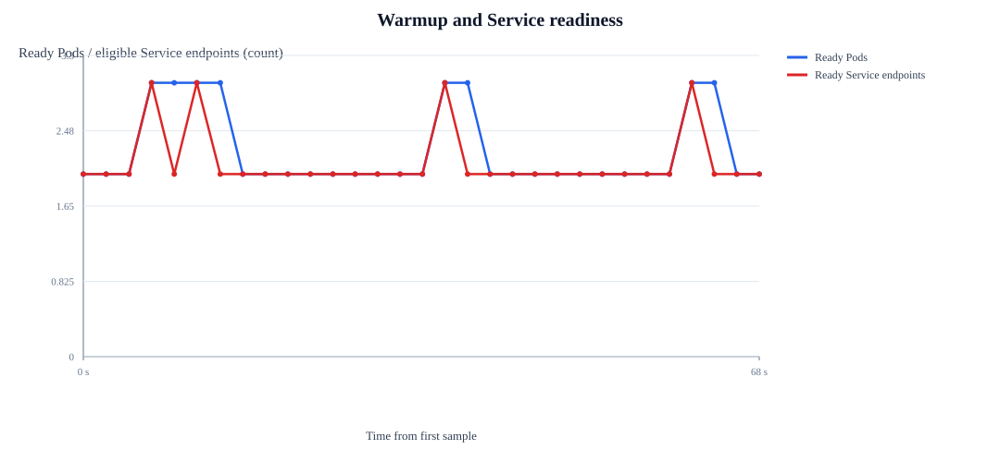
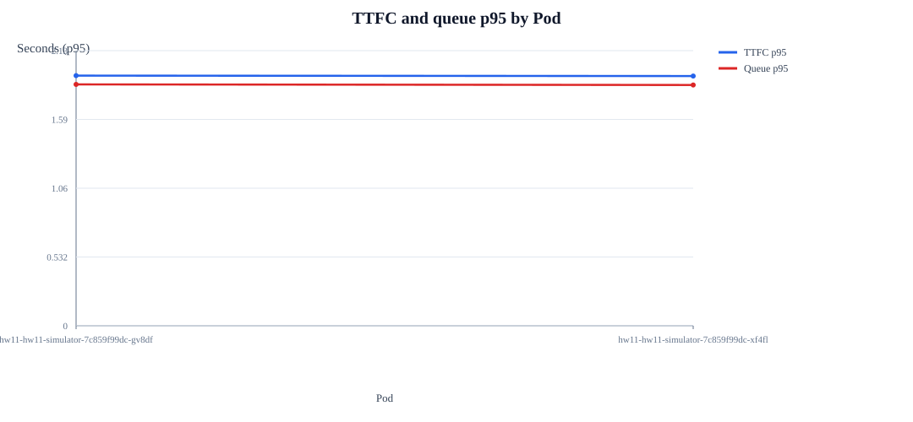
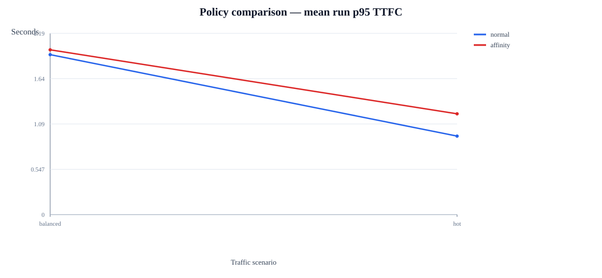
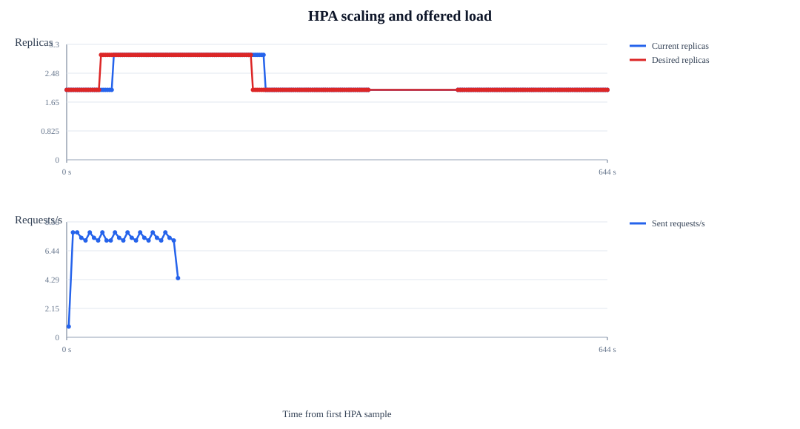

Статус: локальный kind-кластер создан; A/B/C-опыты выполнены.
backend_mode=simulated: это не GPU/LLM inference и не production-capacity benchmark. Для обычных A/B-сравнений HPA был закреплён на двух репликах; HPA-опыт запускался отдельно.
При распределении запросов по двум репликам одна реплика может быть перегружена очередью, даже если средняя CPU по Deployment не выглядит высокой. Pod, который ещё прогревается, не должен попадать в Service endpoints. ClientIP affinity может закрепить горячего клиента за занятым Pod, а средняя CPU для HPA может скрыть перекос. Контур в app.py моделирует прогрев, ограниченную очередь, concurrent limit, prefix-cache hit/miss, CPU burn и потоковые ответы; он всегда сообщает backend_mode=simulated.
Артефакт симулятора размещён в ConfigMap и проверяется по SHA-256 при старте каждого Pod. Версия и hash отдаются клиенту. История диалога приходит в теле каждого запроса, поэтому замена Pod не удаляет session state.
| Тема | Реализация | Доказательство, доступное сейчас |
|---|---|---|
| Readiness и прогрев | Раздельные /health, /startup, /ready; Helm-флаг probes.badProbes воспроизводит раннюю готовность. | При ошибочных probes 126/240 запросов отклонены; после исправления 233/240 завершены. Незрелый Pod отвечал 503 на /ready и /generate. |
| Обновление и версия | RollingUpdate maxUnavailable=0; 30 s grace; ограниченная история revision; hash ConfigMap закреплён в шаблоне Pod. | Длинный SSE-запрос пережил rollout, нагрузка дала 12/12 успешных ответов. Негодный выпуск не стал Ready; rollback восстановил sim-v3 и ожидаемый SHA. |
| Балансировка | Два Service над тем же Deployment; локальный bounded prefix cache; 4 Indexed client Pod и детерминированная нагрузка. | 12 контролируемых запусков по 120 s; на каждом timeline подтвердил две Ready-реплики и два Ready endpoint. |
| Метрики и HPA | Classic Histograms, low-cardinality labels, Prometheus discovery, Grafana dashboard, HPA 2–3 CPU и два алерта. | Зафиксирован переход HPA 2→3→2. Оба alert rules наблюдались в firing и вернулись в inactive. |
| Учет ответов | JSONL журнал с request/session ID, Pod, version; результаты клиента различают completed/rejected/aborted/timed_out. | Принудительное удаление Pod оборвало один поток; замещающий Pod восстановился за 22.98 s, сохранив версию, hash и request-scoped history. |
Один локальный процесс, WARMUP_SECONDS=0, версия local-smoke-v1, один слот генерации, 1 запланированный req/s в течение 5 s; четыре виртуальных client ID, но один реальный source IP. Начальный cache для данного run ID холодный; первая часть учитывает cache miss, вторая и последующие части — только decode delay. Это демонстрация формата измерений, а не стендовый результат задания.
| Измерение | Результат |
|---|---|
| planned / sent / completed | 5 / 5 / 5 |
| rejected / aborted / timed out | 0 / 0 / 0 |
| Успешные наблюдения | 5 |
| TTFC p50 / p95 | 0.185 / 0.239 s |
| Полный ответ p50 / p95 | 0.387 / 0.473 s |
| Inter-chunk p50 / p95 (25 интервалов) | 0.049 / 0.051 s |
| Queue wait p50 / p95 | 0.000004 / 0.000007 s |
Сырые записи и summary: results/local-smoke.csv, results/local-smoke.summary.json. Измерения получены на одной машине и не характеризуют два Pod, Kubernetes Service или HPA.
При неправильных probes новый Pod становился обслуживаемым до окончания 20-секундного прогрева: за 30 s при 8 RPS отправлено 240 запросов, 114 завершились, 126 получили отказ (52.5%). После переключения на /startup и /ready при той же нагрузке завершились 233 из 240; 7 были отклонены насыщенной очередью. Прямые проверки непрогретого Pod подтвердили 503 на /ready и /generate.
Поток из 32 частей пережил rolling update; отдельный 120-секундный запуск дал 12/12 завершённых ответов без abort/timeout. Выпуск с неготовым backend не появился в Ready EndpointSlice; Helm rollback вернул sim-v3. SHA-256 артефакта: 3a6b97599b5e54e173d6ac02399ce5fa49970d886d05a864ea0fc36fe6d0bc90. Принудительное удаление Pod оборвало текущий поток с outcome aborted; новый Pod того же ReplicaSet восстановился за 22.98 s, интеграционная проверка подтвердила версию, SHA и изолированную историю диалога.
Данные: bad-probe summary, good-probe summary, rollout summary, replacement evidence.
Для balanced и hot сценариев выполнено по три 120-секундных прогона при 8 запланированных RPS, ровно двух Ready Pod и двух Ready endpoints. Каждая строка агрегирует 2,880 запланированных/отправленных запросов; p95 — среднее арифметическое трёх p95 по запускам. Время в таблице — секунды.
| Трафик | Политика | Completed | Rejected | TTFC p95, mean | Full p95, mean |
|---|---|---|---|---|---|
| balanced | normal | 2,788 / 2,880 | 92 (3.2%) | 1.931 | 2.137 |
| balanced | ClientIP affinity | 2,114 / 2,880 | 766 (26.6%) | 1.988 | 2.199 |
| hot | normal | 2,880 / 2,880 | 0 | 0.948 | 1.157 |
| hot | ClientIP affinity | 2,880 / 2,880 | 0 | 1.216 | 1.426 |
Все B-прогоны имели 0 abort и timeout. При balanced traffic affinity заметно увеличила отказы, тогда как normal Service распределил нагрузку лучше. В hot сценарии affinity не вызвала отказов, но средний run p95 TTFC был выше. Это результаты bounded simulator с локальным prefix cache, а не универсальная характеристика Kubernetes или реальной модели. CSV каждого клиента, агрегаты и timeline сохранены в results/b-*.csv и results/b-*-timeline.jsonl.
Для отдельного balanced-affinity прогона временно выставлен cpuBurnMs=30, HPA target CPU 60%, min=2, max=3, scale-down stabilization 60 s. Из 960 запросов 726 завершились и 234 были отклонены; abort/timeout не было. Timeline зафиксировал масштабирование 2→3 в 17:56:30Z и возврат 3→2 в 17:59:30Z; далее все endpoints оставались Ready. После опыта нагрузка симулятора возвращена к cpuBurnMs=15.
InferenceFailureRatioHigh перешёл в pending, затем firing во время нагрузки. InferenceTTFCHigh уже был firing при первой выборке (не приписывается именно этому прогону). После снижения нагрузки и истечения окна Prometheus оба правила вернулись в inactive. Это JSON API состояния Prometheus, не только конфигурация alert rules.
HPA load summary, alert timeline, cleared alert state, replica/endpoint timeline.




Для simulator используются TTFC (до первого содержательного chunk) и inter-chunk latency, не TTFT/TPOT/tokens/s. Успешные клиентские p50/p95 вычисляются по монотонным клиентским часам. Серверный classic histogram хранит только успешные ответы; cache hit/miss — bounded label, Pod и version — labels discovery.
histogram_quantile(0.95, sum by (le, pod, prefix_cache) (rate(inference_ttfc_seconds_bucket[5m])))
histogram_quantile(0.95, sum by (le, pod, prefix_cache) (rate(inference_response_seconds_bucket[5m])))
sum by (pod) (inference_running)
sum by (pod) (inference_waiting)
sum by (pod) (rate(inference_requests_total{outcome="completed"}[1m]))
sum by (pod, outcome) (rate(inference_requests_total{outcome=~"rejected|aborted"}[1m]))
Сверка должна использовать один run ID и одинаковый набор успешно завершённых request ID, учитывая разницу между histogram scrape windows и клиентскими timestamps.
Не следует навсегда закреплять диалог за Pod. Иллюстративно: если A обещает очередь 3 s, а B может пересчитать сохранённый префикс за 0,8 s, для нового запроса предпочтительнее B, если бюджет задержки допускает пересчёт и стоимость восстановления проверена измерениями. Решение нужно принимать по возрасту очереди, ожидаемой длительности завершения, глубине/стоимости prefill, реальному hit rate префикса, доступной памяти/CPU и SLA, а не только по мгновенной длине очереди. Нужны p50/p95 TTFC и full latency по Pod, cache hit/miss, длина и возраст очереди, доля отмен, стоимость токенов/CPU и частота потери состояния. Установите ограничение на очередь и admission timeout; не направляйте запрос на B только по сигналу «у A занято», если прогноз A всё ещё лучше бюджета или B уже перегружена.
Историю держите в клиенте либо внешнем хранилище с версией/контрольной суммой и передавайте в каждом запросе: потеря A тогда не уничтожает диалог. Если восстановление невозможно, верните явный отказ и попросите восстановить контекст, а не молча начните новую сессию. Уже начатый поток остаётся на A до завершения; переносить его середину на B нельзя без протокола resume/deduplication. При аварийном обрыве отметьте попытку как aborted, сохраните request ID и разрешите повтор только с явной семантикой идемпотентности.
docs/homework11.html, но нет упомянутого в нём lecture11-extended.html. Поэтому привязка разбора к конкретному company case из лекции и первичному источнику остаётся незаполненной; кейс не выдумывался.
docs/homework11.html, но отсутствует упомянутый lecture11-extended.html. Поэтому company case и первичный источник не выдумывались и не приписывались отчёту.